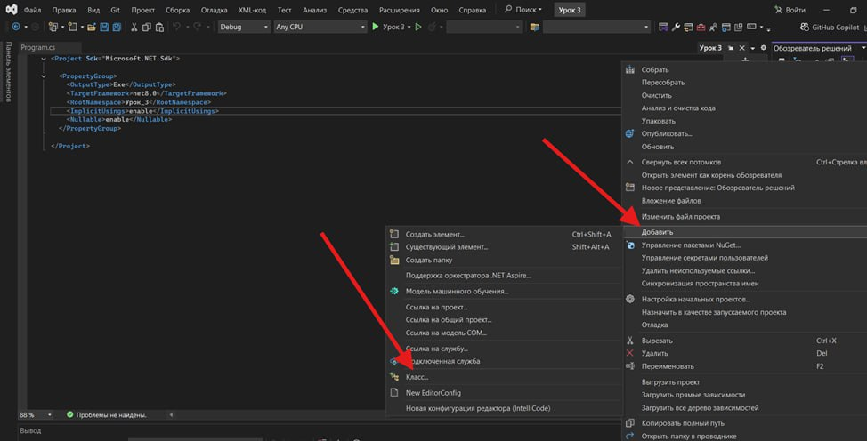
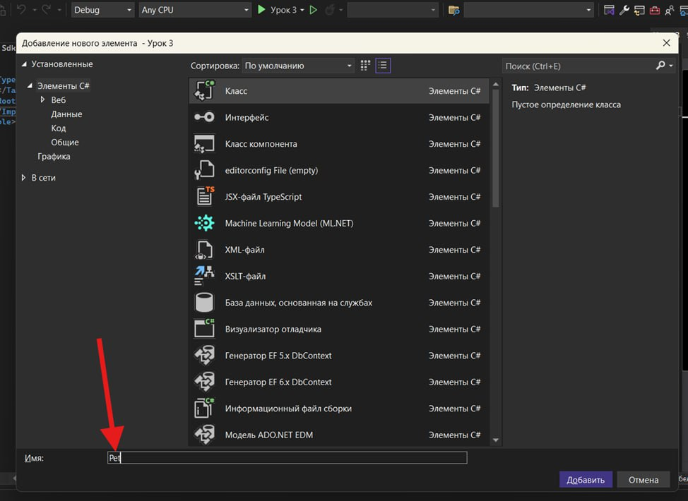
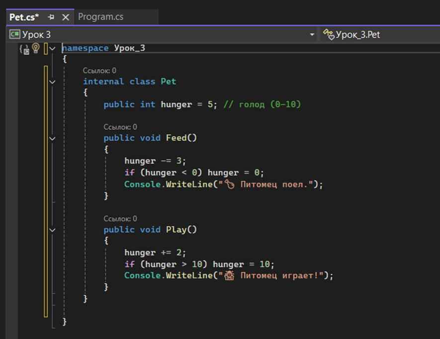
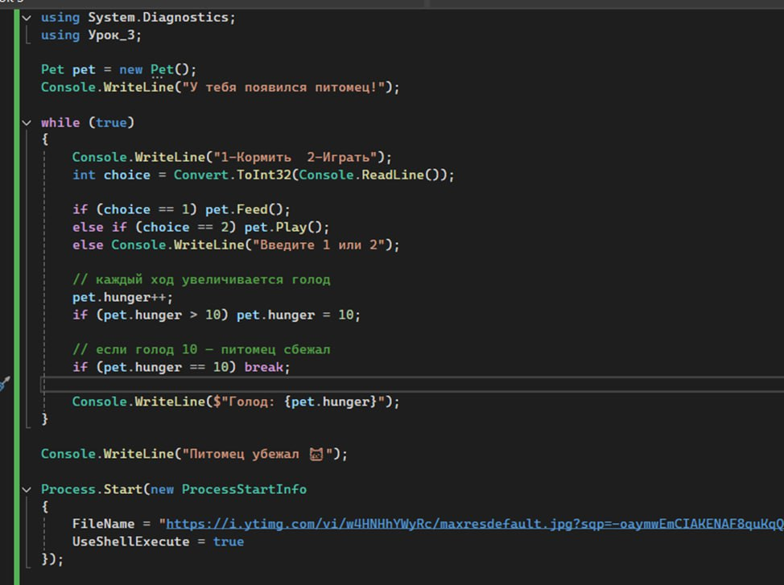
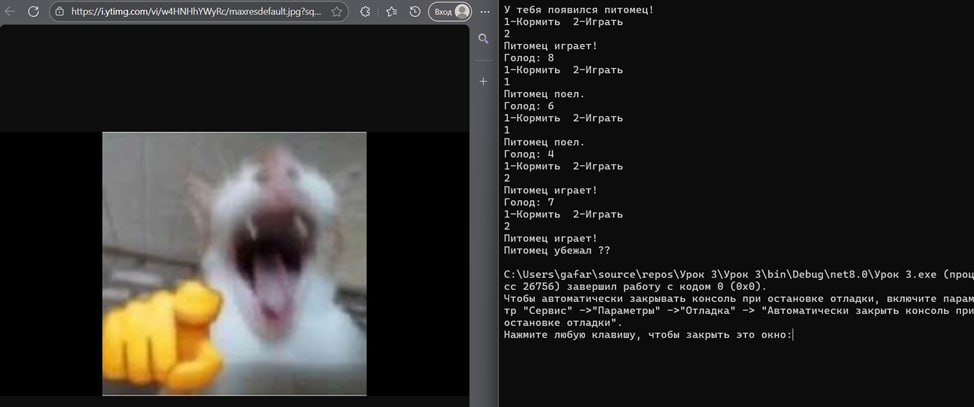

Блок 1 — Повторение прошлых тем
Задай эти вопросы детям перед началом 👇
rand.Next(1, 101)?
= и сравнением
==?Console.ReadLine()?
Convert.ToInt32()
к результату ReadLine()?Новая тема — Классы и объекты
Настало время познакомиться с ООП — объектно-ориентированным программированием. Звучит сложно, но идея проста 😊 Если раньше мы работали с разрозненными переменными и командами, то ООП позволяет собрать связанные данные и действия в одно целое — класс. От класса мы затем создаём объект (как экземпляр этого класса) и работаем уже с ним.
📐 Класс = шаблон / чертёж
- Описывает, какими свойствами обладает объект
- Описывает, что объект умеет делать
- Как рецепт блюда — сам по себе не еда
- Пример: класс Pet — общая идея «питомца»
🐾 Объект = конкретный экземпляр
- Создаётся по шаблону класса
- Имеет реальные значения полей
- Можно создать несколько объектов одного класса
- Пример: твой питомец Бобик
Мы уже встречались с классами! Random rand = new Random(); — здесь Random — это класс, а rand — объект. Console — тоже класс с методами WriteLine, ReadLine и др. Теперь создадим свой!
У класса внутри могут быть:
- 🗂️ Поля (fields) — переменные, которые хранят состояние объекта (как характеристики)
- ⚙️ Методы (methods) — функции, описывающие действия, которые объект умеет делать
Например, у класса Pet будут такие поля состояния: голод (0 — сыт, 10 — очень голоден), радость (уровень счастья), энергия (уровень сил). И следующие методы: Кормить(), Играть(), Спать().
Если питомец станет слишком голодным (hunger = 10), он «сбегает»! Программа выведет сообщение и откроет в браузере картинку убегающего кота 😂
Как это будет работать в программе? Мы создадим класс Pet с полями и методами. Затем в Main создадим объект этого класса. Управлять им будем в цикле: программа спрашивает, что сделать (1 — покормить, 2 — поиграть), считывает команду и вызывает соответствующий метод объекта. Цикл позволит выполнять много действий подряд. Если голод питомца достигнет 10 — программа прервёт цикл: питомец «сбежит», и игра закончится.
Глава 1 — Создание класса питомца
internal class Pet {}

Теперь добавляем код внутрь фигурных скобок класса Pet:
internal class Pet { public int hunger = 5; // голод (0–10) public void Feed() { hunger -= 3; if (hunger < 0) hunger = 0; Console.WriteLine("🍗 Питомец поел."); } public void Play() { hunger += 2; if (hunger > 10) hunger = 10; Console.WriteLine("🤹 Питомец играет!"); } }

Разбор класса Pet:
- Поле hunger — показатель голода от 0 до 10, начальное значение 5 (средний голод)
- Метод Feed() — уменьшает голод на 3, не даёт уйти ниже 0, выводит сообщение в консоль
- Метод Play() — увеличивает голод на 2 (игра тратит силы), ограничивает до 10
- Класс объединяет состояние и поведение — это и есть суть ООП!
Глава 2 — Цикл ухода за питомцем
Класс готов! Теперь напишем основную логику игры в файле Program.cs. Нам нужен цикл, который будет повторять запрос действия и обновлять питомца, пока игра не окончена.
Открой Program.cs и добавь следующий код:
using System.Diagnostics; using Урок_3; Pet pet = new Pet(); Console.WriteLine("У тебя появился питомец!"); while (true) { Console.WriteLine("1-Кормить 2-Играть"); int choice = Convert.ToInt32(Console.ReadLine()); if (choice == 1) pet.Feed(); else if (choice == 2) pet.Play(); else Console.WriteLine("Введите 1 или 2"); // каждый ход увеличивается голод pet.hunger++; if (pet.hunger > 10) pet.hunger = 10; // если голод 10 — питомец сбежал if (pet.hunger == 10) break; Console.WriteLine($"Голод: {pet.hunger}"); } Console.WriteLine("Питомец убежал 😿"); Process.Start(new ProcessStartInfo { FileName = "https://i.ytimg.com/vi/w4HNHhYWyRc/maxresdefault.jpg", UseShellExecute = true });

🔍 Разбор кода по шагам:
using System.Diagnostics; — подключает пространство имён, чтобы
использовать класс Process. Без этой строки команда Process.Start() не будет доступна.Pet pet = new Pet(); — создаём экземпляр класса Pet (ранее мы
импортировали этот класс через using Урок_3). У него есть поле hunger, которое начинается со
значения 5.while (true) — бесконечный цикл. Работает, пока мы сами его не
остановим командой break.Console.ReadLine(), конвертируем в число, вызываем метод pet.Feed() или
pet.Play(). Если другое значение — выводим предупреждение.pet.hunger++ — после каждого хода голод увеличивается на 1. Это
имитация времени — питомец постепенно снова хочет есть. Стоит проверка, чтобы значение не
превышало 10.pet.hunger == 10 — выполняется break. Питомец стал слишком
голодным и «сбежал», цикл завершается.Process.Start(...) — открывает ссылку в браузере. Параметр
UseShellExecute = true говорит системе использовать стандартный способ открытия файла или
ссылки.
Заключение урока
В этом уроке мы впервые создали свой класс и управляли объектом через его методы. Мы увидели, как состояние объекта меняется со временем и как цикл позволяет построить «живую» игру. Это первый шаг к настоящему объектно-ориентированному программированию.
✅ Что изучили
- Понятие класса и объекта в ООП
- Поля — хранение состояния
- Методы — действия объекта
- Создание класса Pet
- while(true) + break
- Process.Start для открытия ссылки
🔑 Ключевые слова C#
- class — шаблон / чертёж
- new — создать объект
- public — доступно снаружи
- void — метод не возвращает значение
- break — выйти из цикла
- using — подключить пространство имён
Доп. интерактив: Можно устроить соревнование — кто дольше продержит питомца живым! Или добавить новые поля (радость, энергия) и новые методы (Sleep). Попробуй добавить несколько питомцев — ведь это разные объекты одного класса! Можно разыграть приз 10к 🏆